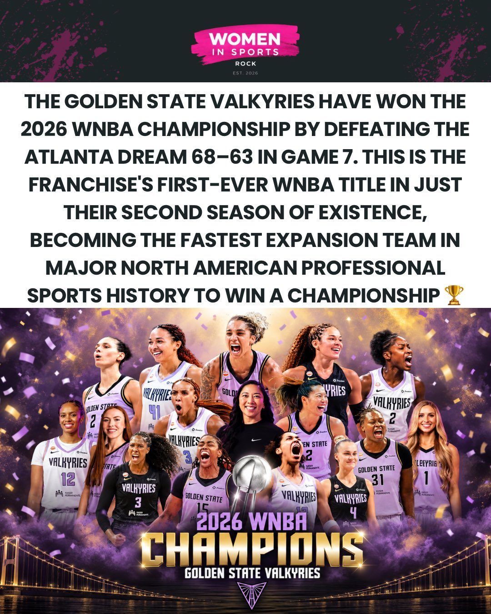

Sport
Golden State Valkyries vann WNBA redan andra säsongen – Gabby Williams avgjorde första sjunde finalmatchen någonsin

Golden State Valkyries är WNBA-mästare efter 68–63 mot Atlanta Dream i den första sjunde finalmatchen i ligans historia. Gabby Williams gjorde 30 poäng och utsågs till finalens mest värdefulla spelare, och laget blev mästare redan under sin andra säsong.
Natten till söndag svensk tid avgjordes WNBA-finalen i en match som saknade motstycke. Golden State Valkyries slog Atlanta Dream med 68–63 i Chase Center i San Francisco, i den första sjunde matchen i en WNBA-final någonsin, och vann klubbens första mästerskap.
Williams tog över
Matchens stora namn var Gabby Williams. Enligt East Bay Times skakade hon av sig en tung första halvlek och drog sedan laget över mållinjen. Hon slutade på 30 poäng, med fyra trepoängare och fyra blockeringar, och tog det mesta i tredje perioden. Hon utsågs till finalens mest värdefulla spelare, enligt Frontside Hoops. Kiah Stokes tog 13 returer, enligt Redefined Odds.
För Atlanta var Jordin Canada bäst med 18 poäng och fem assist, enligt statistiken från Cable Cardz.
Mästare på rekordtid
Valkyries spelar bara sin andra säsong i ligan, och Herb Scribner på Axios lyfter fram just det. Enligt bland andra Women In Sports Rock är det den snabbaste titeln för ett nytt lag i de stora nordamerikanska proffsligorna. Supportrarna, som kallar Chase Center för "Ballhalla", firade titeln under natten, bland annat i inlägg som det här.
Så vet vi det
Källmix: 9 källor – 3 analys, 3 journalist, 2 etablerad media, 1 debattör. Etablerad media utgör 2 av 9.
- Etablerad media East Bay Times: Williams bar Valkyries över mållinjen
- Etablerad media Oakland Tribune om finalen
- Journalist Herb Scribner, Axios: mästare under andra säsongen
- Journalist Frontside Hoops: Williams finalens MVP
- Journalist We Speak Sports: Williams tog över i tredje perioden
- Analys Cable Cardz: statistiken från matchen
- Analys Redefined Odds: Kiah Stokes 13 returer
- Analys Women In Sports Rock: snabbaste titeln för ett nytt lag
- Debattör Supporter om titeln och "Ballhalla"
Resultatet och Williams poäng är samstämmiga hos ett stort antal källor. Uppgiften att det är den snabbaste titeln för ett nytt lag i de stora nordamerikanska ligorna återges av flera konton, men vi har inte sett den från ligan själv.
Fördjupa
Frågorna öppnar Grok i en ny flik med artikeln som underlag. AI-svar kan innehålla fel, så kontrollera mot källorna.
- Hur byggdes Golden State Valkyries upp så snabbt efter starten 2025? ↗
- Vem är Gabby Williams, och hur har hennes karriär sett ut? ↗
- Varför har det aldrig tidigare blivit en sjunde match i en WNBA-final? ↗
- Hur gick det för Atlanta Dream under säsongen, och vad saknades i finalen? ↗
- Hur har intresset för WNBA förändrats de senaste åren? ↗
Läs vidare
Uppdateringslogg
- 07:45 – Artikeln publicerad.